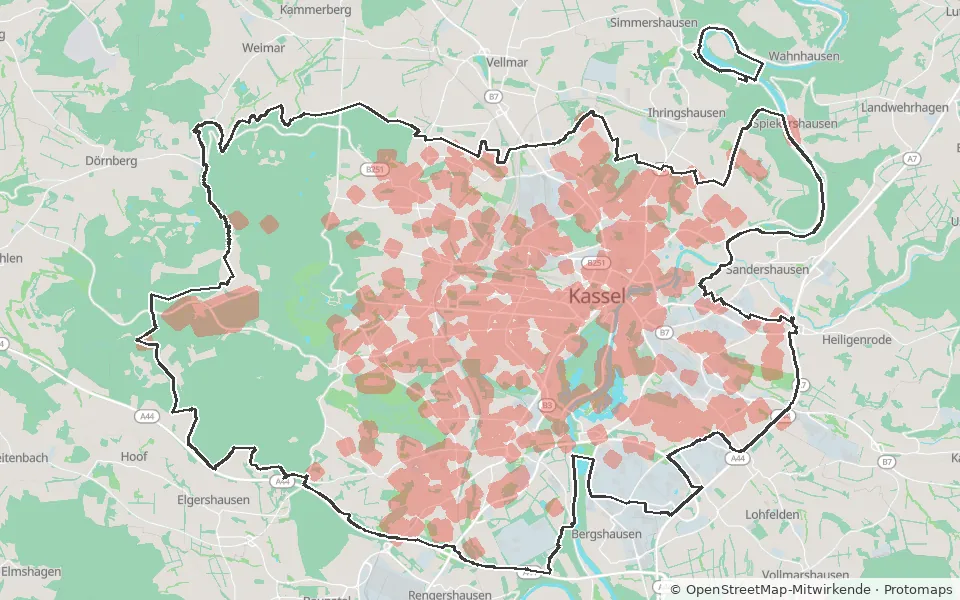
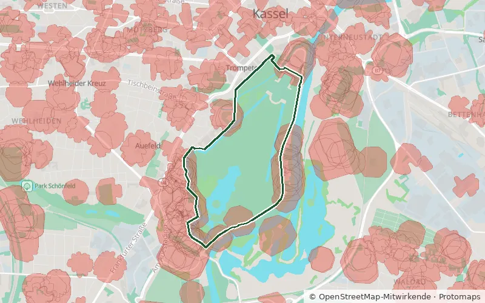
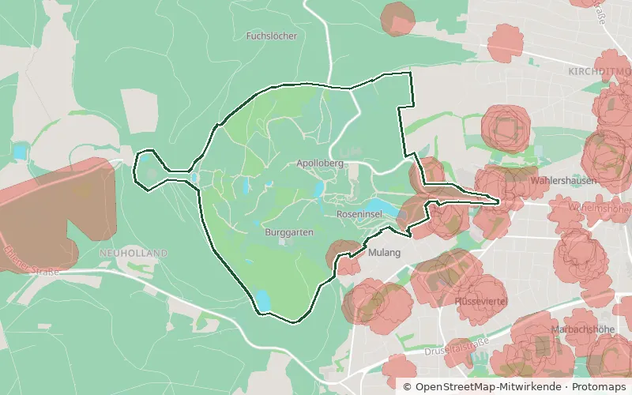
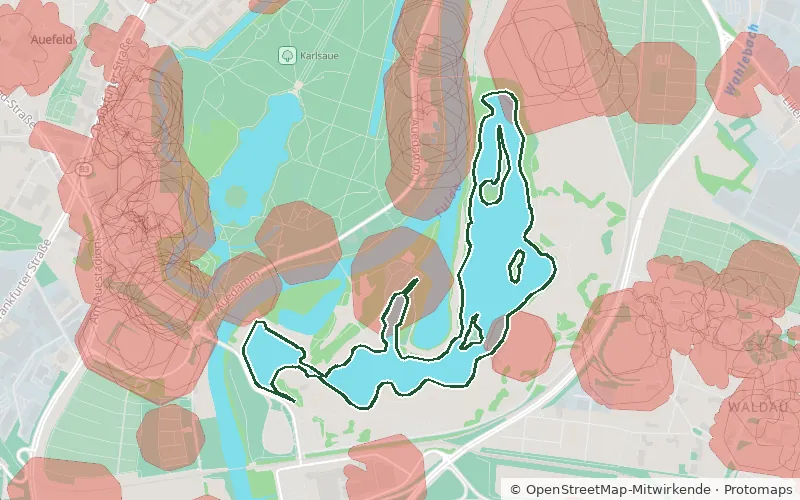
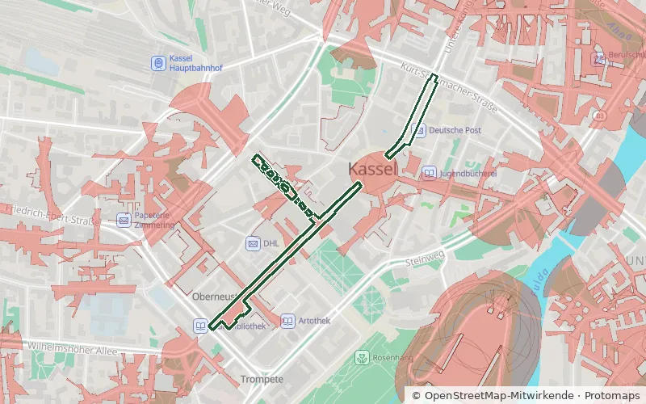
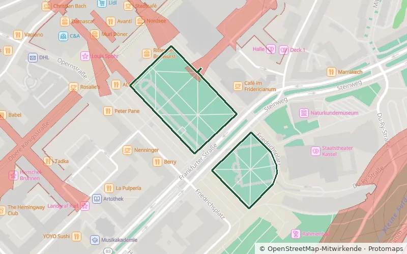
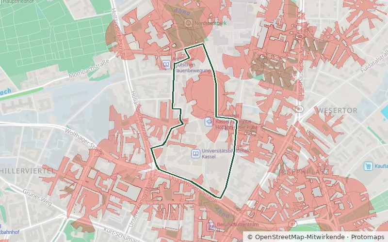

In Kassel ist öffentliches Kiffen auf 18 km² verboten, das sind 16,8 % der Stadtfläche von 107 km². Grund sind 873 Einrichtungen wie Schulen und Spielplätze: In ihrer Sichtweite, bis 100 Meter vom Eingang und ohne Gebäude dazwischen, verbietet § 5 KCanG den Konsum. Dazu kommen die Fußgängerzonen von 7 bis 20 Uhr und überall die Gegenwart von Minderjährigen.
Gut ein Viertel der Stadt ist Wald (28 % der Stadtfläche), und davon liegen nur 6,7 % in einer Zone; ohne den Wald gerechnet sind es 20,7 %.

Woher die Zonen in Kassel kommen
| Einrichtung | Anzahl | Zonenfläche |
|---|---|---|
| Schulen | 85 | 4,6 km² |
| Kitas und Kindergärten | 91 | 2,8 km² |
| Kindertagespflege | 11 | 0,3 km² |
| Spielplätze | 249 | 6,3 km² |
| Kinder- und Jugendeinrichtungen | 19 | 0,5 km² |
| Sportstätten | 418 | 9,4 km² |
Jede Art für sich gezählt, Überlappungen also mehrfach. Anbauvereinigungen nur, soweit in OpenStreetMap eingetragen.
Die meisten Zonen gehen auf die 418 Sportstätten zurück, danach auf die 249 Spielplätze. Auf den Spielplätzen selbst verbietet das Hessische Nichtraucherschutzgesetz außerdem das Rauchen (HessNRSG, § 1). Die Gefahrenabwehrverordnung der Stadt verbietet nur „rauschbedingte“ Störungen, nicht den Konsum (Gefahrenabwehrverordnung).
Karlsaue, Bergpark und Fulda
In der Karlsaue liegen 18 % der Fläche in einer Zone, vor allem an ihren Rändern: Im Park liegt nur eine Sportanlage, bis 100 Meter um ihn fast 50. Im Bergpark Wilhelmshöhe sind es 5 %. Die Parkordnungen beider Parks sagen zu Rauchen und Cannabis nichts (Karlsaue, Bergpark).


Von der Fuldaaue liegen 10 % in einer Zone, vom Bugasee 5 % der Wasserfläche. Für die Aue hat die Stadt eine eigene Verordnung, auch sie nennt Cannabis nicht (Fuldaauen-Ordnung). Auf einem 100 Meter breiten Streifen Land entlang der Flüsse sind es 19 %. Die Goetheanlage liegt fast ganz in einer Zone (99 %), das Tannenwäldchen zu 63 %, die Kunsthochschule zu 10 %. Von der Regattastrecke liegen 28 % der Wasserfläche in einer Zone, vom Aueteich in der Karlsaue 0 %.

Innenstadt
Als Fußgängerzonen nennt die Straßenverkehrsbehörde Königsplatz, Obere und Untere Königsstraße, Opernplatz, Wilhelmsstraße, Friedrichsplatz, Goethe-Promenade und Willy-Brandt-Platz (Stadt Kassel); die Treppenstraße steht nicht in der Liste. In den Fußgängerzonen gilt von 7 bis 20 Uhr Konsumverbot; blau sind die Fußgängerbereiche aus OpenStreetMap.
Von der Königsstraße liegen außerdem 51 % in einer Sichtweiten-Zone, vom Königsplatz 85 %. Der Friedrichsplatz liegt fast ganz außerhalb (1 %); tagsüber gilt dort aber das Verbot der Fußgängerzone.


Universität und Auestadion
Hochschulen sind nach § 5 KCanG keine Verbotsorte. Vom Campus Holländischer Platz der Universität liegen 35 % in einer Zone, um zwei Kitas, einen Spielplatz und drei Sportanlagen. Die Stadionordnung des Auestadions verbietet Alkohol, Drogen nennt sie nicht (Stadionordnung).

Für Märchenweihnachtsmarkt und Zissel haben wir keine eigene Regel der Stadt zu Cannabis gefunden.
Was sonst noch in Kassel gilt
Hessen hat feste Bußgelder: Konsum in einer Verbotszone, auch in der Fußgängerzone, kostet 500 Euro, in Gegenwart von Kindern und Jugendlichen 1.000 Euro (Bußgeldkatalog Hessen). Zuständig ist die Stadt. Genehmigte Anbauvereinigungen gibt es auch in Kassel (hessenschau, Juni 2025); die Karte kennt sie nur, soweit sie in OpenStreetMap eingetragen sind. Eigene Verbotszonen für Cannabis hat Kassel nicht (Stand 27. November 2026).
Häufige Fragen zu Kassel
Wo darf man in Kassel kiffen?
Nach § 5 KCanG außerhalb der roten Flächen, etwa im Bergpark Wilhelmshöhe (5 % in einer Zone). Tagsüber nicht in den Fußgängerzonen, auch nicht auf dem Friedrichsplatz, nie in Gegenwart von Minderjährigen und nicht gegen ein Hausrecht. Weiß heißt nicht sicher erlaubt: Hecken, Bäume und fehlende Einrichtungen kennt die Karte nicht.
Wie genau ist das?
Täglich aus OpenStreetMap gerechnet, mit Gebäuden als Sichthindernis; die Zahlen hier sind vom 27. November 2026. Eine Orientierungshilfe, keine Rechtsauskunft (wie gerechnet wird).
Fehlt eine Einrichtung? Korrekturen in OpenStreetMap stehen am Tag darauf auf der Karte; bitte nur eintragen, was es vor Ort gibt.